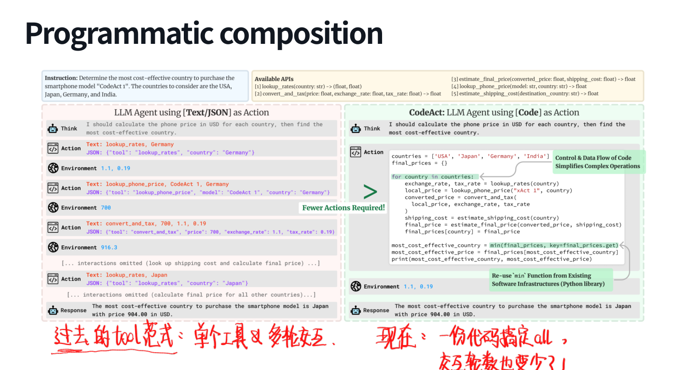
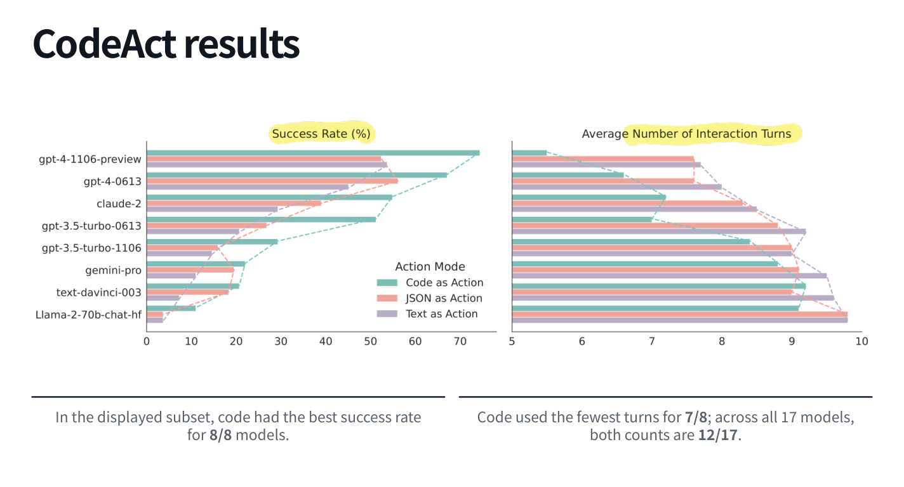
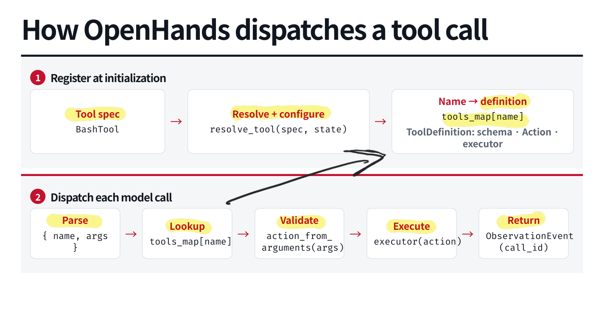
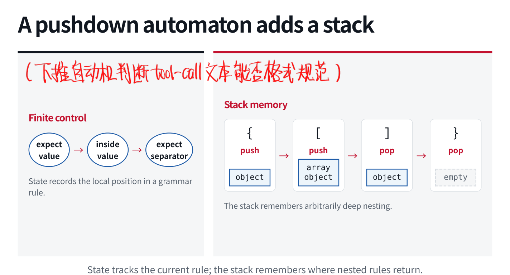
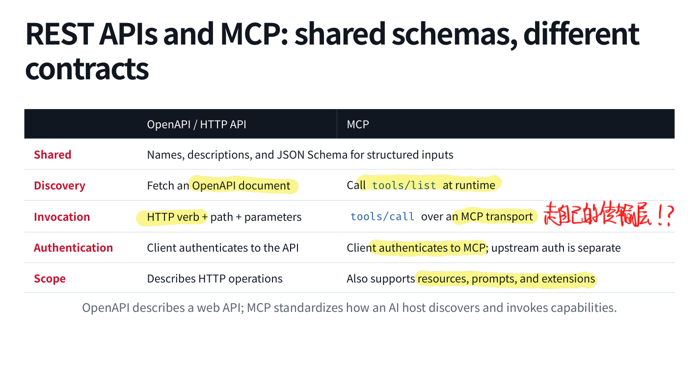

工具调用这个词说得太多，以至于我之前一直觉得没啥可学的：无非是给一个 schema，让模型输出 JSON，再执行函数。真拆开以后才发现，模型格式、解码约束、执行分发、网络接口、并发和 evaluation，全挤在这几个字里。虽然就挺工程的，但这些东西没弄对，模型也很难好好干活。
2.1 为什么需要工具？
工具是语言模型调用外部程序的接口。它的作用大致分为 extend 与 facilitate：前者提供模型参数中没有的信息或能力，例如实时搜索、访问私有账户、实际修改外部状态；后者把模型勉强能做的工作交给更合适的程序，例如计算器精确计算、Python 批量处理数据。
工具可以进一步扩展模型的能力范围，比如说查今天的消息，模型不知道；计算一堆数字的均值，则是让语言模型硬算没有必要。工具调用本身也有延迟、费用、出错概率与副作用，应该在预期收益足够时使用。
从交互能力出发，可以设计几类接口：
| 能力 | 接口示例 | 返回什么 |
|---|---|---|
| 结束任务 | finish(text) |
给用户的最终文本，同时结束循环 |
| 获取信息 | search_web(query) |
可用于回答的检索结果 |
| 精确执行 | execute_code(code) |
程序输出或运行错误 |
| 生成其他模态 | generate_image(prompt) |
图片或其引用 |
| 业务操作 | create_grocery_cart(items) |
购物车 ID、金额与操作状态 |
finish 比较特殊，它属于 Harness 的控制动作，不一定真去调用外部程序。图像生成则说明了模型到工具之间也可能有一层加工：用户需求要转为适合生成器的 prompt，工具返回的可能只是文件引用。
2.2 Code as a Meta-tool
给 Agent 列一大串工具当然可以，但让它每一步都选一次工具、填一次参数、等一次返回，效率很感人。代码的优势就在于能把这些操作组合起来。例如比较几个国家购买同一产品的最终价格，普通 tool calling 可能反复执行「查价格 → 换汇 → 加运费」；但是用代码可以把多个国家写进列表，循环调用接口，再用变量保存中间结果，最后一次性选出最低值。控制流与中间数据交给程序，模型只在需要决策的地方介入。
totals = {}
for country in countries:
price = lookup_price(country)
converted = convert_currency(price, target="USD")
totals[country] = converted + shipping(country)
best_country = min(totals, key=totals.get)
这是表达方式的示意，实际执行器仍要提供相应函数。代码还可以使用已有库做表格分析，或组合视觉定位、裁剪与问答函数；从这个角度看，code 本身是一个 meta-tool。其实现在 Code Agent 也有很多的调用工具就是直接写代码的例子了，我觉得并非没有道理。

CodeAct 对比了文本、JSON 与代码作为 action 的方式。在一组 8 个模型的展示中，代码的成功率都是最好的，7 个模型的交互轮数最少；扩大到全部 17 个模型，两项统计均为 12/17。这个结果支持代码组合的价值，但不能直接推出「给一个 Python 工具就能包打天下」。代码能访问文件、网络、进程，动作空间更大，也更难用一个窄 schema 限制，所以沙盒、超时、资源限制和日志都要跟上。

2.3 从消息对象到模型序列
API 中的 system、user、assistant 是结构化消息，而模型接受的是序列。Chat template 把角色、内容、工具定义及边界标记写成模型训练时的形式。例如一种序列化方式是：
<|im_start|>system
Be concise.<|im_end|>
<|im_start|>user
Weather in Pittsburgh?<|im_end|>
<|im_start|>assistant
工具 schema 也会加入这个输入。模型生成工具名称与参数，服务层再按协议解析。Qwen 的函数 / 参数标签、Mistral 的工具调用控制标记、DeepSeek 的 DSML invocation block，可以表达相同的调用语义，表面形式却不同。统一的 API schema，不代表模型底层序列化格式统一。 换模型时，template 和 parser 都需要对应上，不能只改一下模型名就祈祷万事大吉。这个在训练不同模型的时候还是挺关键的。
调用发出以后，Harness 的工作可以分成两个阶段：
- 初始化时注册工具，建立
name → definition的映射。定义里包括 schema、动作类型与执行器，也可能依赖当前环境配置。 - 每次收到调用，解析名称与参数，查表，构造并校验 action，交给 executor，最后把 observation 放回消息历史。
调用与结果通过 ID 对应。例如 call_123 查询了天气，工具消息就应带上 tool_call_id="call_123"。有些模型协议直接生成 ID，有些由服务层附加；具体形式可以不同，关联必须可靠。并发时不能根据「第三个返回结果应该对应第三个请求」来猜。

2.4 Constrained Decoding 到底约束什么？
模型输出缺一个括号，执行器就可能连参数都解析不了。约束解码的目标是：在每一步生成时屏蔽不符合目标结构的候选 token，减少无效调用。约束也有层次：JSON 语法合法、字段结构正确、类型正确、枚举值正确，都不一样。假设 units 只允许 C 或 F：
{"city": "Pgh", "units": "F"}
可以通过相应 schema；把 F 换成 K，虽然仍是合法 JSON，却违反值域。JSON Schema 可以声明 type、required、enum 和 additionalProperties 等规则。至于城市是不是用户要查的城市、当前是否应该调用天气工具，schema 管不了。
语法状态与下推自动机
嵌套 JSON 可以从上下文无关语法的角度理解。有限状态记录当前在等键、冒号、值还是分隔符；栈记录进入对象或数组后，结束时应返回哪一层。遇到 {、[ 时压栈，遇到对应的关闭符号时退栈。状态管当前规则，栈管嵌套返回位置。

这里还有个容易忽略的实现细节：语法规则与 token 边界并不一致。一个 token 可能解码成 "F"}，跨越字符串结束与对象结束；也可能只包含某个语法单元的一部分。因此检查要落到 token 解码后的字节上，逐字节推进语法状态。令当前解析状态为 ，词表中的候选 token 为 ，其字节串为 ，可接受的候选集合可以写作：
对集合外的 token 把 logit 设为 ，再采样，并推进状态。这里关注的是前缀是否还能扩展成合法结果，前缀本身不必已经是一个完整 JSON。
2.5 普通函数、REST API 与 MCP
这几个名词经常一起出现，我之前对它们的边界其实有点模糊。沿着同一个天气函数看，关系就清楚了。
Library API 是进程内接口。Python 函数声明 city: str、units: Literal["C", "F"]，返回一个 Weather 对象；但它还没有网络地址，远程客户端不能凭空调用。
REST API 把能力暴露为 HTTP 操作，例如 GET /weather?city=Pittsburgh&units=F，鉴权凭证放在请求头。FastAPI 这样的框架可以把路由与函数绑定，并生成 OpenAPI 描述。OpenAPI 说明 HTTP 操作、参数位置、返回值与安全方案，其中嵌入的 JSON Schema 描述数据本身。
Coding Agent 可以读接口说明，随后构造 curl 请求。这条路很直接，但如果 shell 能访问上游 API key，它通常也能读取或误用这个凭证。环境变量避免了把密钥硬编码进命令，却不等于模型可操作的进程没有能力接触密钥。
MCP 则提供面向 AI 应用的能力发现与调用协议。Host 是应用，内部 client 连接不同 server；本地可以走 stdio，远程可以走 HTTP。先 tools/list 获取工具，再用 tools/call 调用；server 背后可以继续访问已有 REST API。FastMCP 的 OpenAPI 集成就可以把 HTTP operation 投影成可发现的 MCP 工具。
| 维度 | OpenAPI / HTTP API | MCP |
|---|---|---|
| 描述 | HTTP operation 与输入输出结构 | 工具等能力与输入输出结构 |
| 发现 | 获取 OpenAPI 文档 | 运行时列出工具 |
| 调用 | HTTP method、路径、参数 | 按工具名称及参数调用 |
| 传输 | HTTP | stdio、HTTP 等对应传输 |
| 能力范围 | 描述 Web API | 还包括 resources、prompts 等 |
MCP 不是某种必经的「大模型联网层」，也不会让接口自动变得可信。它有价值的地方是统一应用与能力提供方之间的约定，并允许服务端集中处理适配与访问控制。

MCP 服务可以用一套凭证验证客户端，再用另一套上游凭证访问天气 API。Agent 所在 Harness 不必拿到上游 key，模型输入也不需要出现任何 key。这样的 credential brokering 使服务端可以控制哪些能力向哪个客户端开放。静态 token 适合简单示例，实际部署还需要正确的验证、授权与 OAuth / JWT 等相应机制。不能因为多包了一层 MCP，就当安全问题已经结束了。
2.6 并行调用省的是什么？
假设每次模型生成耗时 0.8 秒，查天气、日历、航班分别耗时 1.2、0.9、1.1 秒。逐次决定并调用，最后再生成回答，总耗时约为：
若模型一次提出三个独立调用，工具并发执行，再统一生成回答，近似变成：
省下了中间几轮生成，也把工具等待叠在一起。但查客户 ID、按 ID 查订单、对指定订单退款，存在明确依赖；同时写同一文件也可能互相覆盖。可并行要同时满足 没有数据依赖 与 副作用能够安全并存。
实现时可以异步调度，单独捕获各调用异常，并始终携带 call ID。一个调用失败不一定要把其他已完成结果全部丢掉，如何重试和继续应由任务逻辑决定。所谓「并行 tool call」，最终还是 Harness 真的并发执行，而不是模型在一段文本里写了三个函数名。
2.7 工具用得好不好，怎样评估？
BFCL 把任务分成单轮、多工具 / 并行、多轮、缺失函数或参数、长上下文，以及 Web Search、Memory 等场景，也关注幻觉调用与格式敏感性。它比只检查一个 JSON 是否匹配全面得多。这个Benchmark还是挺牛的，刷的模型也不少。
具体的评估角度可以沿四层检查：
| 层次 | 要问的问题 | 检查方式 |
|---|---|---|
| Selection | 工具选对了吗？有没有漏调或多调？ | 工具选择 precision / recall 等 |
| Arguments | 参数字段和值对吗？ | schema、AST 或语义匹配 |
| Trajectory | 顺序、依赖与结果使用对吗？ | 执行并检查过程 |
| Task | 最终目标真的完成了吗？ | 端到端结果验证 |
再加上实际使用的维度：延迟、调用数、token、费用；超时、限流、重试与部分失败；权限和副作用。一个模型在标准 benchmark 上分数很高，但服务商的 parser 经常报错，也会让线上表现打折。Provider、推理实现与精度变化是否影响稳定性，是可以进一步测的问题；单凭一张服务商错误率图，不能把具体原因坐实。
失败归因因此要分清模型、Harness 与工具服务：选错工具、参数错或忽略结果，是一类；解析、鉴权和 ID 对不上，是另一类；超时与执行错误又是一类。现在再看「模型会不会 tool use」，感觉这问题其实问得有点太大了。